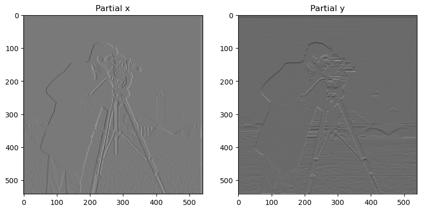
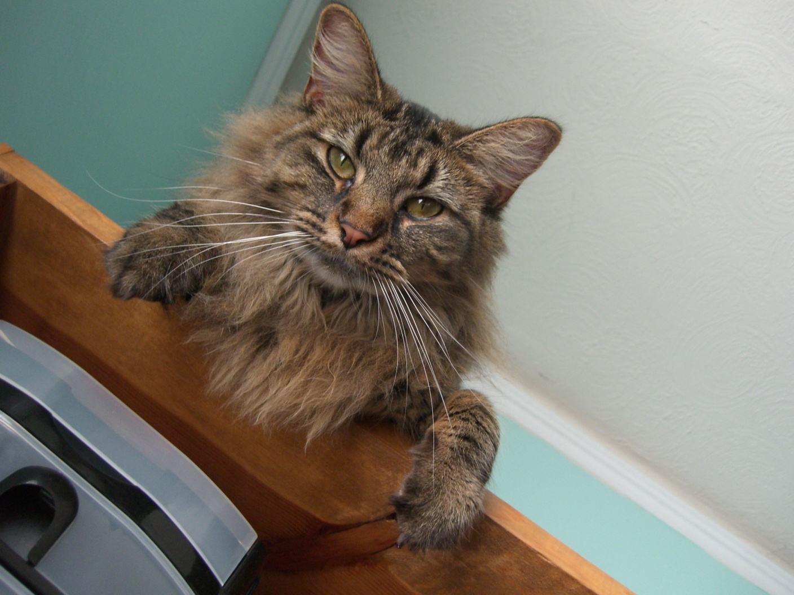
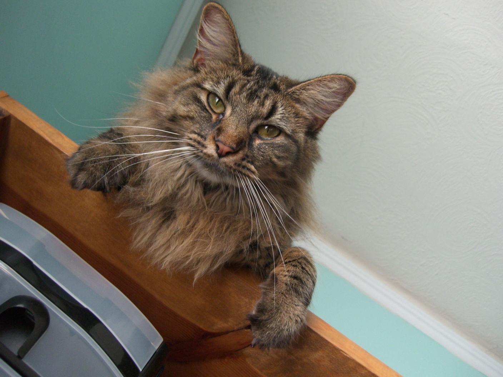
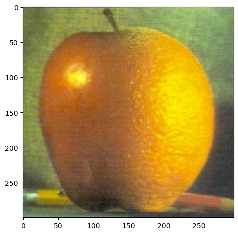
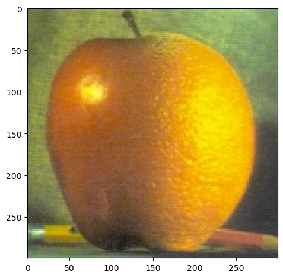
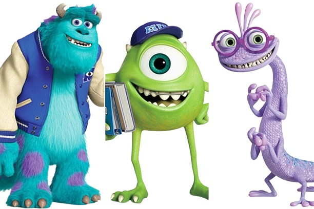
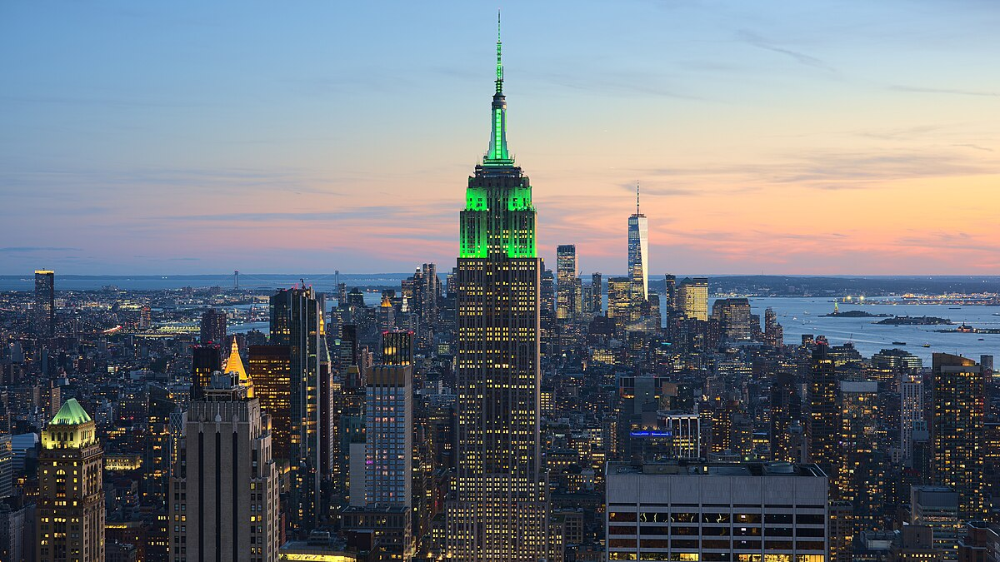

In this project, I got to play with images in the frequency realm. Using certain techniques I will detail below, I got to see the different frequencies (low and high) of images and combine them in a way to either sharpen, hybridize, or blend images together!

Here are the partial x and y derivatives of this image. This was computed by convolving the finite difference operators, Dx = [[-1, 1]] and Dy = [[1], [-1]] with the image. Partial x and partial y repectively show changes in brightness when moving across the image horizontally and changes in brightness when moving across the image vertically. This essentially means that partial x and partial y detect vertical and horizontal edges, respectively.
Now that we have the partials, we have the componenets of the gradient vector. Taking the magnitude is simple! Like any other vector, it is the squareroot of the sum of squares of the components. Here is the result:
We can binarize this image at different thresholds to create an edge image. You can see from the following that the threshold needs to be qualitatively tuned. On the far left, it's too low, capturing too much noise as signal. On the far right, we're missing some important edges. However, the middle threshold was about the best I could get it--it is the golilocks in this case.
Hmmm but there's still some noise...what else can we do?
If we smooth the image before finding the gradient, we should be able to minimize noise. To achieve the smoothing, I used a handy 2D guassian filter, by taking the outer product of a 1D guassian with its transpose. After smoothing the image, I repeated the procedure from 1.1: partials with two separate convolutions -> gradients of magnitude -> binarize.

What do you see? I see that after the Gaussian filter was applied, the image is a lot more smooth. Now, even at a very low threshold relative to part 1.1, there are no weird noise lines on the bottom going horizontally. But wait, what if I feel like doing this in a different order? Well, connvolution (unlike cross-correlation) is really neat in that it has communative and associative mathematical properties. With its associative property, we can actually first create derivative of gaussian filters (DoG) for x and y and then convolve those with the image. Then, rinse and repeat the rest of the steps: magnitude, binarize...
Above are the filters that were produced from convolving the finite different operators with the 2D gaussian kernel, and now finally the results of this process:
As you can see, we can pretty much confirm that these two methods are equivalent! Yay to mathematical properties.
Sharpening an image can be achieved by adding more high frequencies into the image. The Gaussian filter can act as a low-pass filter. After smoothing the image from this, we can subtract it from the image to obtain the high frequencies. Then we can add these details by a factor of alpha into the image to sharpen it. But what if we want to streamline this? Well, fear not! Once again, becuase convolution is communative and associative, we can create one filter, called the unsharp mask filter through the following factoring: f +α( f − f ∗ g) = (1+α) f −α f ∗ g = f ∗((1+α)e −αg), where f is the image, g is the gaussian filter, and alpha is the sharpening factor. e is an impulse (identity) filter-- a filter that when convolved with something does not change it. Thus, it is a filter where the center is one, surrounded by zeros. I filtered the following images by convolving with the unsharp mask filter, ((1+α)e −αg):
The sharpening is evident! It gets sharper as alpha increases since this makes high frequencies more prominent.

This is one of my favorite and most random images I've ever taken. I mean, I'd be shocked if someone else has taken an unstaged photo of a cat, dog, and monkey crossing paths. (Question: can you guess where this is?). Because the animals' furs blend into the ground quite a bit, I wondered if they would become more apparent with some sharpening. However, in my opinion the original image looks better. The sharpened version's edges are not much different anyway, and the sharpening took away a lot of warmth. This is most likely because the animals are in the shade, so in trying to make the edges there more prominent, it exaggerated cooler tones.
The sharpening here really helped in the legibility of the text!

This is an example of first blurring an image with a gaussian filter and then sharpening that image. Although it is subtle, the sharpened and original image look more like each other than the blurred, center image.
We can use the fact that we see high frequencies up close and low frequencies at a distance to create hybrid images. This is achieved through averaging two filtered images, one with a low-pass filter and the other with a high-pass filter. The image with the low-pass filter will be able to be seen from a distance and the one with the high-pass filter will be able to be seen up close. The sigma and size of the gaussian filter were visually tuned to ensure that the two images can be seen at different distances. I found it generally best to use color on one image, specfically for the high frequency one, so the cat has color here.
 


I consider the following to be a fail. Although technically, you can see oski up close and Professor Efros from afar, the alignment is really off which makes it look especially bizzare up close. Who knew aligning Professor Efros and Oski would prove to be a challenge?


We learned that many mathematicians, especially Lagrange, were skeptical of Fourier's claim that any function can be decomposed into sine and cosine waves. Lagrange outright rejected the idea. I thought it would be ironic to create a hybrid image of these two great mathematicians, especially since I will be visualizing the 2D Fourier transform of their images. Note: try to about 10 feet away to see Fourier (squinting also helps
And now, the 2D Fourier transforms of Fourier and Lagrange:

A Gaussian stack is created by successively convolving an image with a Gaussian filter, making the image progressively smoother at each level. A Laplacian stack is formed by taking the difference between consecutive levels of the Gaussian stack, which isolates details at different frequency bands. The first level of the Laplacian stack captures the highest frequencies (the finest details), with each subsequent level capturing progressively lower frequencies. To reconstruct an image from a Laplacian stack, you sum all the frequency bands (levels of the Laplacian stack) and add the lowest frequency, which corresponds to the final level of the Gaussian stack.
For smooth image blending, I used Laplacian stacks for the two images I wanted to blend and a Gaussian stack for the mask.
This method enables blending at multiple resolutions. Blending at level k is achieved with the formula:
blend_k = im_1_k * mask_k + (1 - mask_k) * im_2_k.
This process is repeated for each color channel, resulting in the blended levels and the final output.


 

Apparently, Monsters Univerity's campus was inspired by Berkeley's campus (Pixar isn't too far from us!). I have yet to encounter Mike Wazowski roaming around, but through the following blending, we can imagine it. Note that this uses an irregular mask, which was easily obtained since the background of the characters is white.

It's officially fall now! The leaves are changing colors, and this change is captured through the following blend. I was able to find two images where the tree trucks are almost aligned. in the bottom left corner. To make it look like one tree, I used a triangle mask in the left bottom corner. The transition isn't the most smooth even with tuning the guassian kernels, but that's somewhat inevitable since the colors are so different between the two images.


One can't even see a singular star in New York, let alone the milky way, but blending can allow us to imagine what it would look like. Note that I used Photopea to obtain the irregular mask here.


This was a really cool project! It's one thing to learn about concepts like Laplacian stacks or filters in lecture, but actually implementing them is a different experience. Coding these functions from the ground up helped solidify my understanding of how different filters operate, how frequencies influence an image, and how concepts like smoothing, sharpening, and blending work in practice. I also enjoyed the creative aspect of the project—thinking of fun and meaningful images to experiment with added a personal touch. Whether it was sharpening an unusual animal encounter or hybridizing mathematical figures, each part allowed me to have fun with the images I selected.